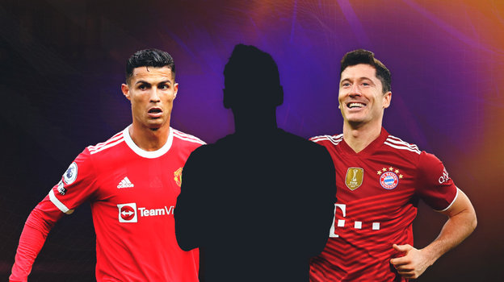

В конце сентября выходит новая версия FIFA 22. Любители футбольного симулятора в предвкушении, чтобы опробовать новый геймплей и познакомиться с обновленными рейтингами футболистов.  Рейтинги игроков составляются на основании аналитики скаутов FIFA. Они оценивают футболистов по ряду параметров и присваивают им числовые значения по разным игровым атрибутам — ускорение, короткие пасы, выносливость и другие. «СЭ» составил список из 10 футболистов FIFA 22 с самыми высокими рейтингами, доба